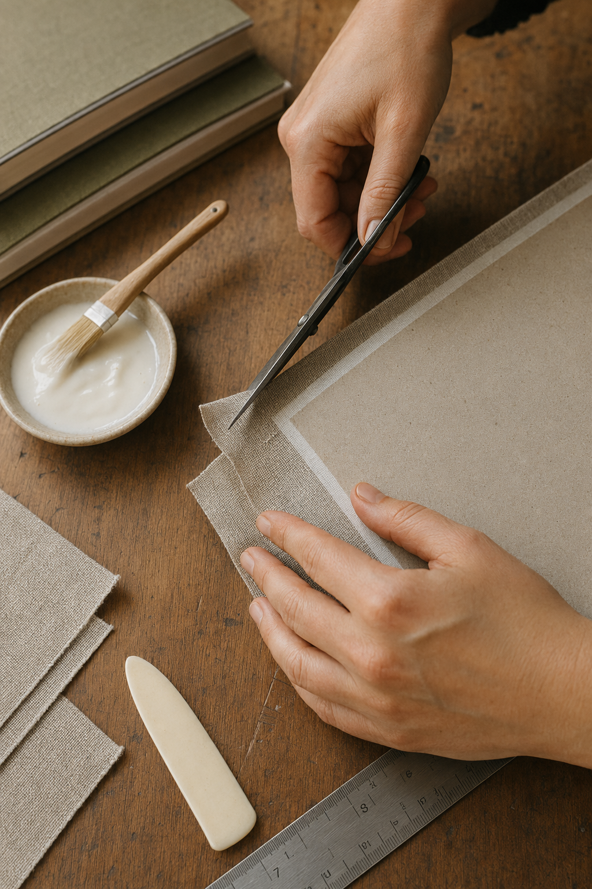
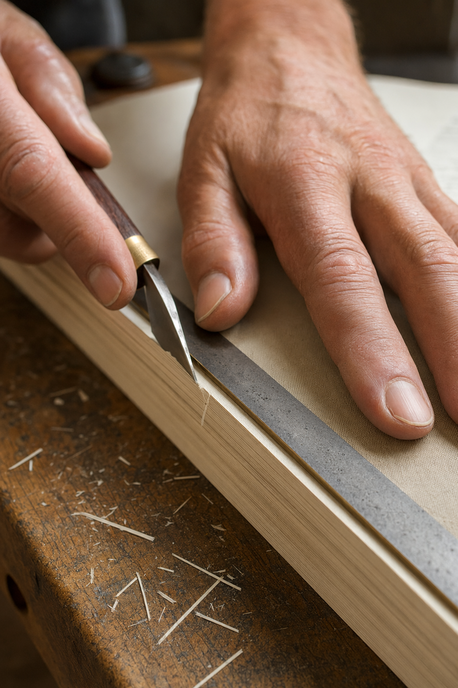

he Quiet Craft of
Bookbinding
Ready to make something that will outlast the trend? Swipe for five ways to begin your first book.
 YOURBRAND
YOURBRAND
Tip — 01
Choose a Cover That Will Age Well
YOURBRANDTip — 02
Fold Every Signature With Care
YOURBRANDTip — 03
Sew a Stitch That Holds
YOURBRAND
Tip — 04
Trim With a Steady, Slow Hand
YOURBRANDTip — 05
Let the Glue Cure Before You Peek
YOURBRAND